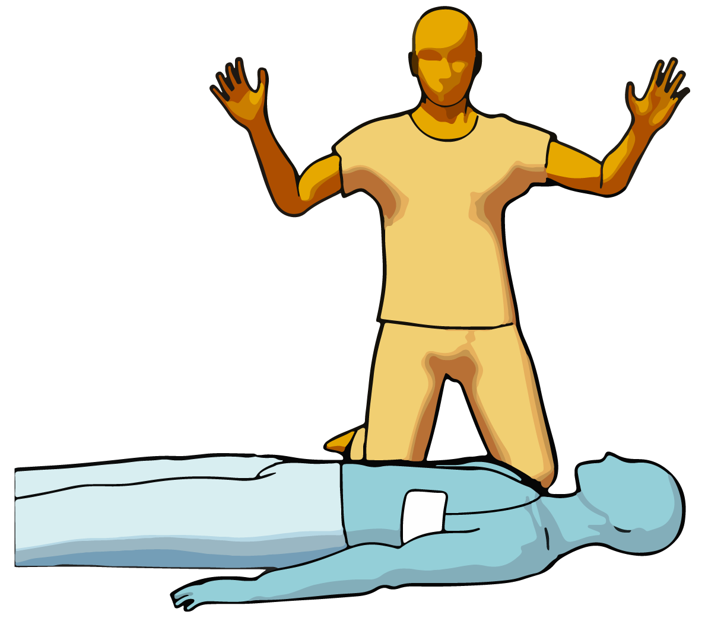

Wait for heart rhythm analysis
Do not touch the victim, and wait for the defibrillator to analyse heart rhythm. The analysis will starts without any intervention. Do not worry, the defibrillator will detect fibrilaltion and only shock if necessary.
Before a shock delivery, the defibrillator will warn you. In semi-automatic mode, the device informs you to deliver the shock by pressing the "shock" button. In automatic mode, it alerts you that the shock will be delivered without your intervention.
